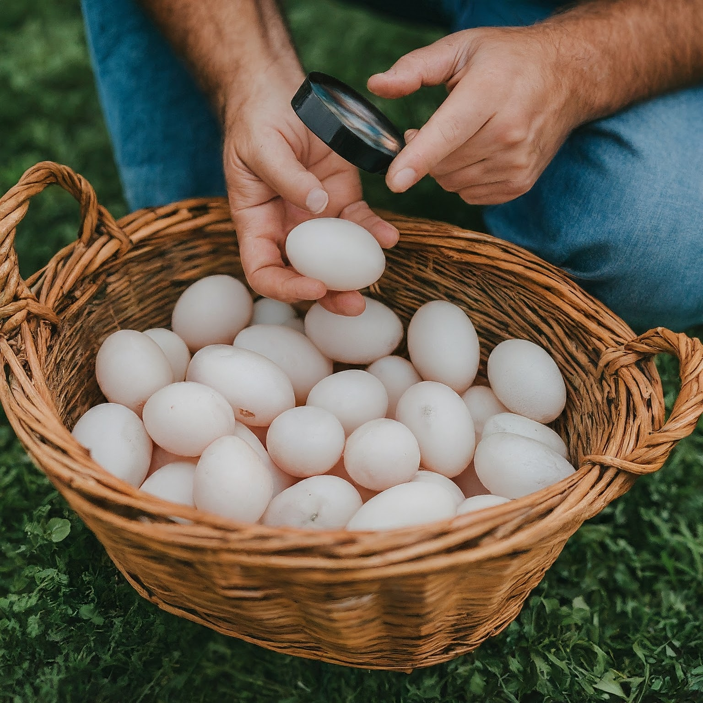
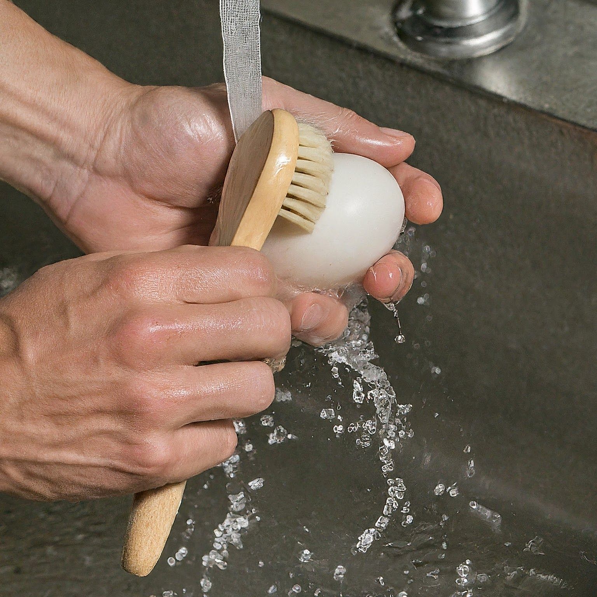
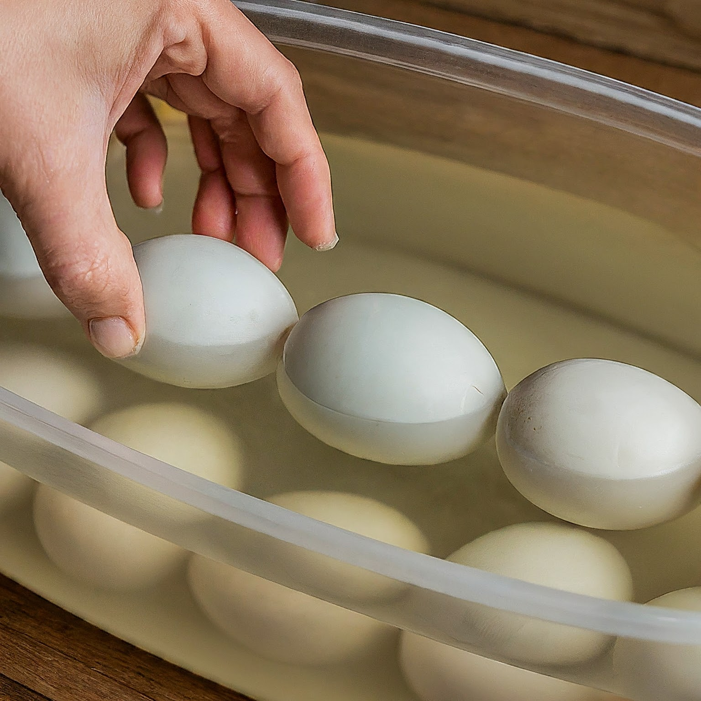
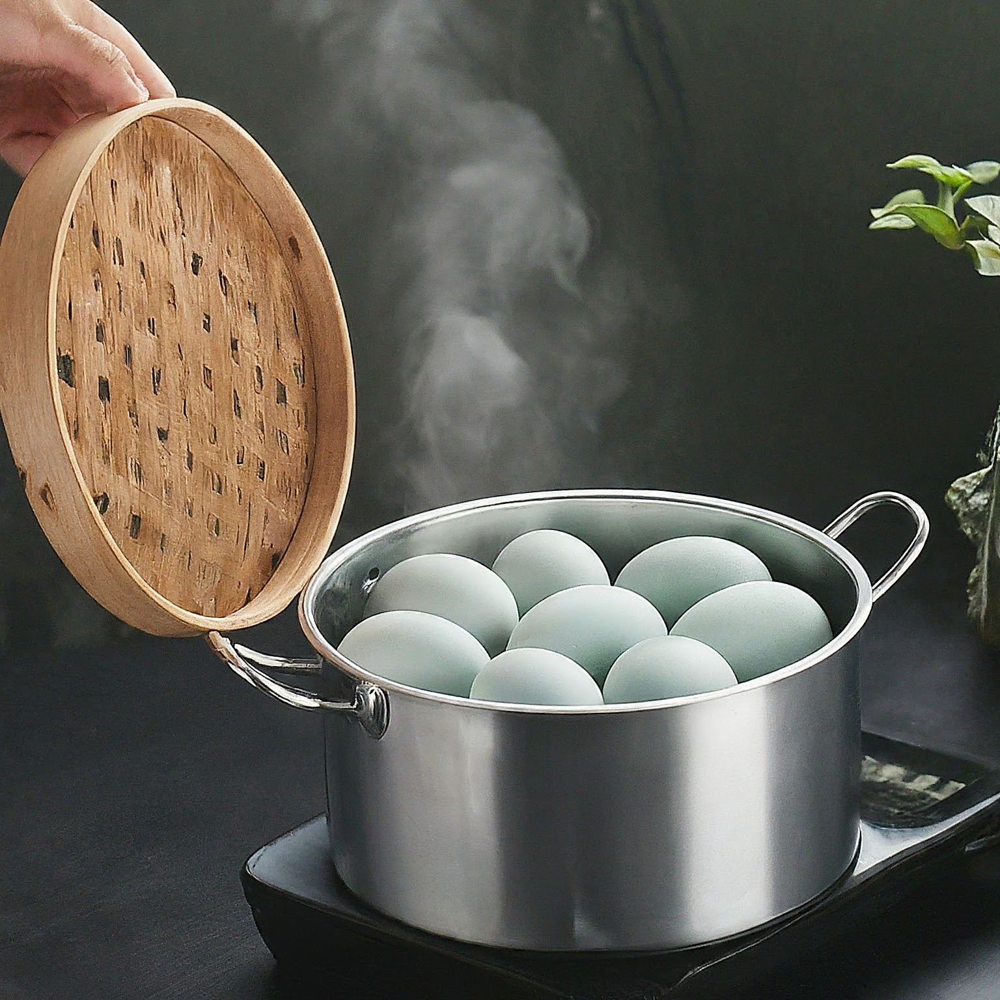
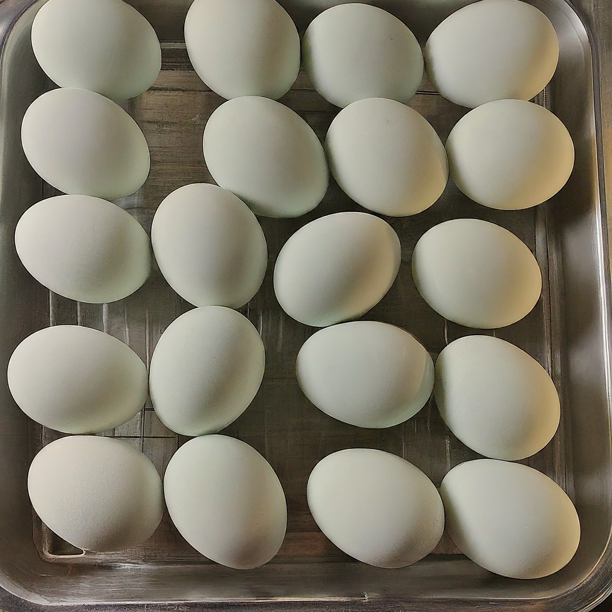

Pemilihan Telur Itik
Langkah pertama dalam pembuatan telur asin adalah memilih telur itik yang segar dan berkualitas tinggi. Telur yang ideal memiliki cangkang yang bersih, tanpa retakan, dan memiliki ukuran yang seragam. Hal ini penting untuk memastikan hasil yang konsisten dalam proses pengasinan. Telur yang baru saja dikeluarkan oleh itik biasanya memiliki kualitas terbaik dan memberikan hasil akhir yang lebih baik. Oleh karena itu, pemilihan telur menjadi salah satu faktor kunci dalam produksi telur asin.
Pembersihan Telur
Setelah memilih telur yang berkualitas, langkah berikutnya adalah pembersihan telur. Telur itik harus dibersihkan secara menyeluruh dengan air bersih untuk menghilangkan kotoran dan bakteri yang menempel pada cangkang. Proses ini sangat penting untuk mencegah kontaminasi dan menjaga kebersihan telur asin. Telur-telur tersebut biasanya digosok dengan lembut menggunakan sikat atau kain lembut untuk memastikan semua kotoran terangkat. Setelah itu, telur dikeringkan dengan handuk bersih sebelum melanjutkan ke proses berikutnya.
Pengasinan atau Perendaman Telur
Langkah selanjutnya adalah proses pengasinan atau perendaman telur dalam campuran abu, garam, dan air. Telur yang telah dibersihkan kemudian direndam dalam campuran abu yang dicampur dengan garam dan air selama 10 hingga 14 hari. Campuran ini berfungsi untuk memberikan rasa asin yang khas pada telur asin dan menjaga kebersihan telur selama proses pengasinan. Semakin lama telur direndam, semakin asin rasanya. Wadah perendaman harus disimpan di tempat sejuk dan teduh selama proses ini berlangsung. Selain itu, telur harus diaduk secara perlahan beberapa kali untuk memastikan bahwa garam merata di seluruh permukaan telur.
Pengukusan Telur Asin
Setelah proses pengasinan selesai, telur asin perlu dimasak agar siap dikonsumsi. Proses ini dilakukan dengan cara mengukus telur selama 3 jam dengan api kompor kecil hingga matang sempurna. Pengukusan dalam waktu yang lama dan dengan api kecil membantu menjaga tekstur lembut dan rasa gurih telur asin. Waktu pengukusan yang tepat memastikan bahwa kuning telur menjadi padat namun tetap lembut dan tidak terlalu keras. Selain itu, proses ini juga membunuh bakteri atau mikroorganisme yang mungkin masih tersisa setelah perendaman, memastikan telur aman untuk dikonsumsi.
Pendinginan dan Penyimpanan
Langkah terakhir dalam pembuatan telur asin adalah pendinginan dan penyimpanan. Setelah dikukus, telur asin didinginkan terlebih dahulu sebelum disimpan. Pendinginan ini penting untuk menghentikan proses memasak dan menjaga tekstur serta rasa telur. Setelah dingin, telur asin disimpan dalam wadah tertutup di lemari es. Penyimpanan yang tepat membantu menjaga kesegaran telur asin dan memperpanjang masa simpannya. Telur asin yang disimpan dengan baik dapat bertahan selama beberapa minggu, tetap menjaga rasa dan kualitasnya. Sebelum disajikan, telur asin dapat dipanaskan kembali atau dimakan langsung sesuai dengan preferensi konsumen.